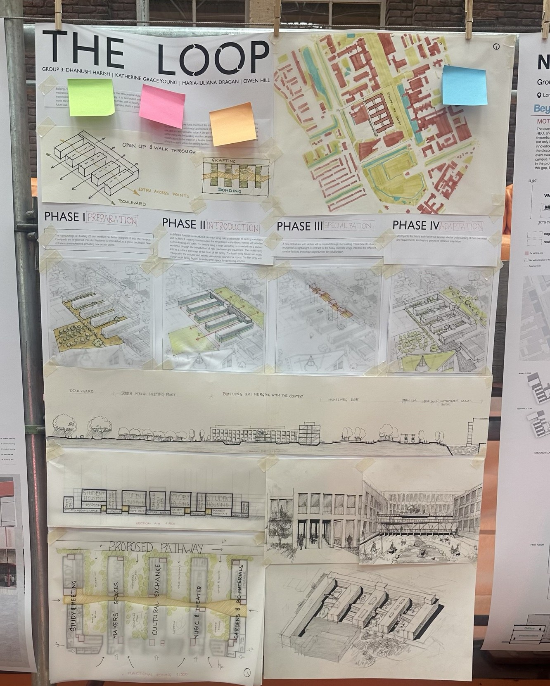
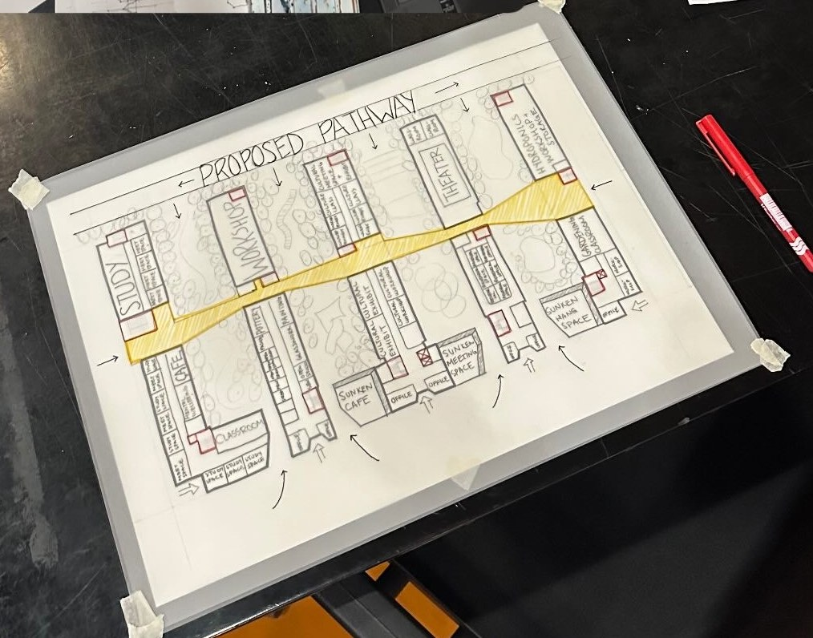
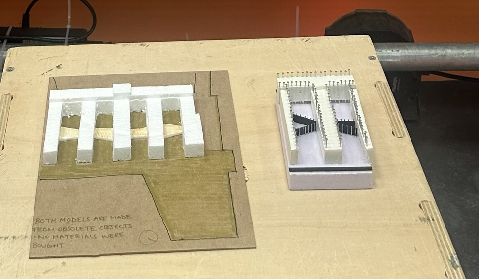
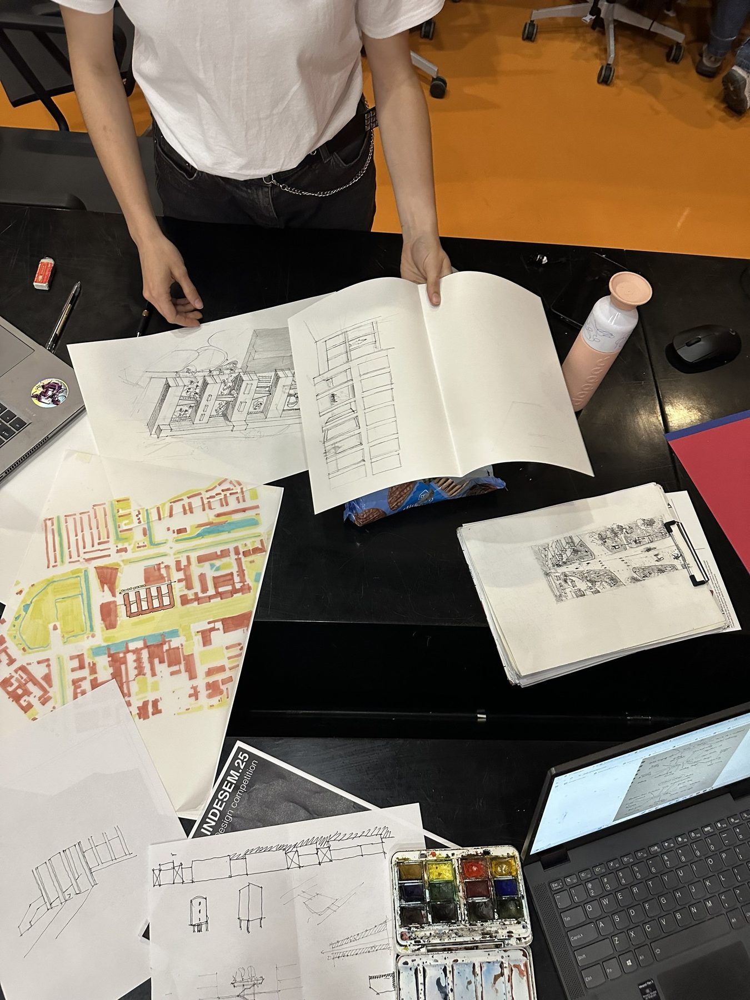
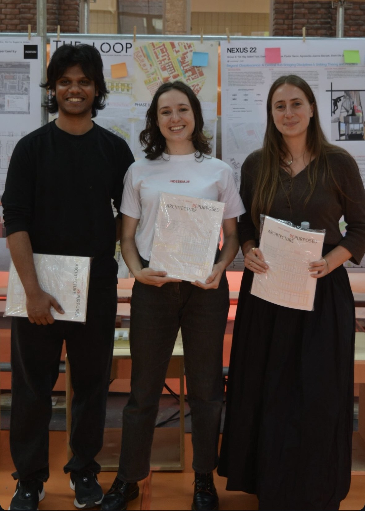
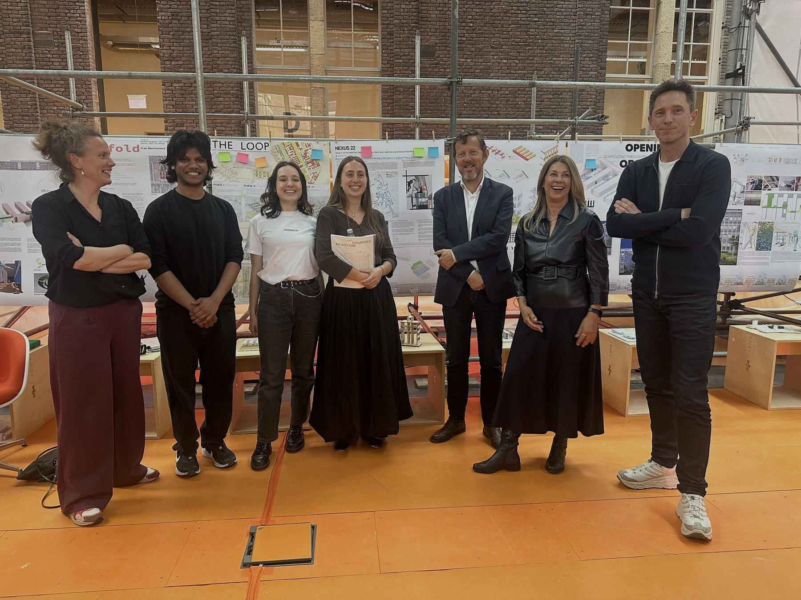

The Loop: INDESEM 2025 First Place

- Award
- First place, INDESEM 2025 design competition
- Host
- TU Delft
- Brief
- 24-hour adaptive reuse challenge
- Team (Group 3)
- Dhanush Harish, Katherine Grace Young, Maria-Iuliana Dragan, Owen Hill
- Media
- Hand drawing, watercolour, models from reused objects
Open up an obsolete building, let people walk through it, and let it change over time.
In 24 hours our team proposed how to bring Building 22 back into the life of the campus. The existing wings are opened up with new access points and a proposed pathway that runs through them, and each wing takes on a new use: study and meeting, makers’ spaces, cultural exchange, music and theatre, and gardens and bio-materials.
Four phases
Preparation, introduction, specialisation and adaptation: the building is transformed step by step, so each phase can respond to how people actually use it.
Made from reuse
Both models were made from obsolete objects. No new materials were bought.




